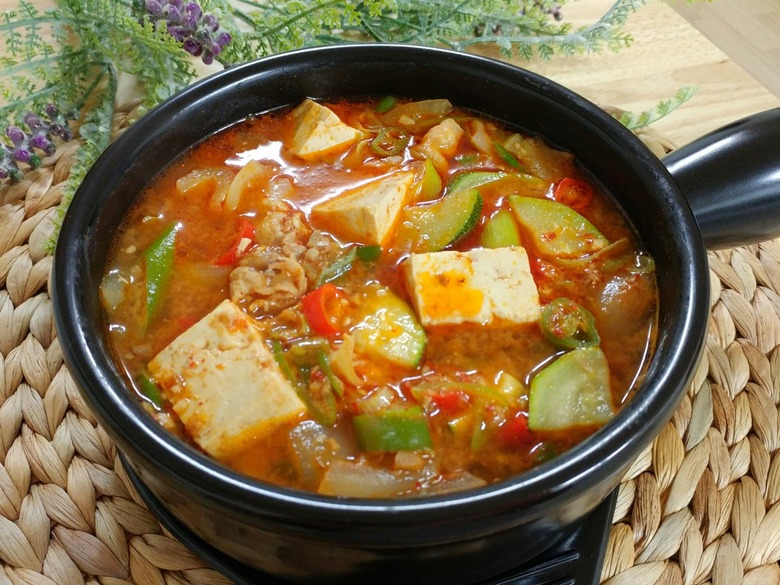

Soybean Stew

Description
Soybean stew is another staple dish in the Korean household. It is a great way to end the night on a chilly day, as the hot and savory broth warms the body and soul.
Ingredients
- Soybean paste
- Anchovy and kelp stock
- Soft tofu
- 1 onion
- 1 zucchini
- 1 pack of oyster mushrooms
- 2 cloves of garlic
- Scallion or pepper for garnish (Optional)
Steps
- Boil a pot of anchovy and kelp stock.
- Cube the tofu, onion, and zucchini. Rip the oyster mushroom into bite-sized pieces.
- Dice the garlic.
- Add in two spoonfuls of soybean paste into the broth.
- Add in tofu and vegetables, except for the garlic.
- Once the stew is boiling, stir in the diced garlic.
- Chop the scallion or pepper and garnish on top before serving (optional).
- Enjoy!